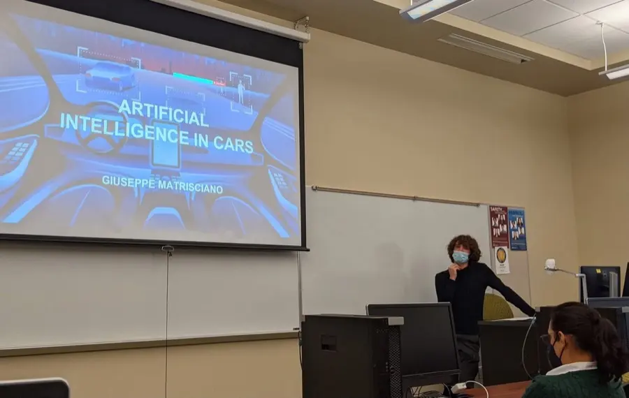

M.S. in Marketing · University of Miami
Miami, FL · 25.72° N 80.28° W
Ciao, I'm Giuseppe Matrisciano

Marketing with an Italian accent.
I help consumer-facing brands connect with younger audiences.
What I offer
I help consumer-facing brands connect with younger audiences through social-first storytelling, consumer insight, and an Italian American perspective on culture and communication.
I'm looking for internships and entry-level roles in digital marketing, social media and brand strategy.
More about meIntroduction video
Meet me in two minutes.
Who I am, what I do and where I'm headed: five years, three campuses and three projects.
Why me
Three claims. Each with proof.
-
Content that connects
- The project
- Underdawgs Podcast, a student-led sports show at the University of Georgia. I edited more than 20 of its clips for Instagram and TikTok and took over its graphics.
- My decision
- One structure for every live-show poster: name, date, venue, and the guest between the two hosts. Each one was printed for the bars in downtown Athens and reused as the Instagram post.
- The result
- More than 200 graphics: posters, Reel covers, YouTube thumbnails. The show's Instagram credits 13 of its posts to me by name.
-
Research-led thinking
- The project
- A Consumer Analytics final project at the University of Georgia: do gender and age predict who owns non-kitchen knives?
- My decision
- Check before assuming: t-tests, a correlation and a multiple regression on 630 survey responses.
- The result
- Neither predicts ownership (men 3.38 knives, women 3.31; p = 0.49). I recommended segmenting by use, not by demographics.
-
Brand ideas in practice
- The project
- A RIMOWA campaign concept with three classmates at the University of Miami: make a luxury luggage brand mean pet travel too, on a $2,000 cap.
- My decision
- Customers' own content, no paid influencers. I presented how to measure it, the same unaided question before and after, and the budget.
- The result
- A 12-month plan at $1,800, pitched in class. It is a concept, so there are no live results to report.
Next step
Let's connect.
I'm looking for internships and entry-level roles in digital marketing, social media and brand strategy.
Let's connect